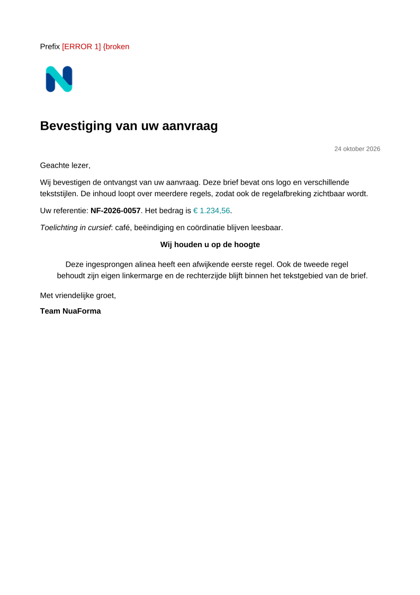
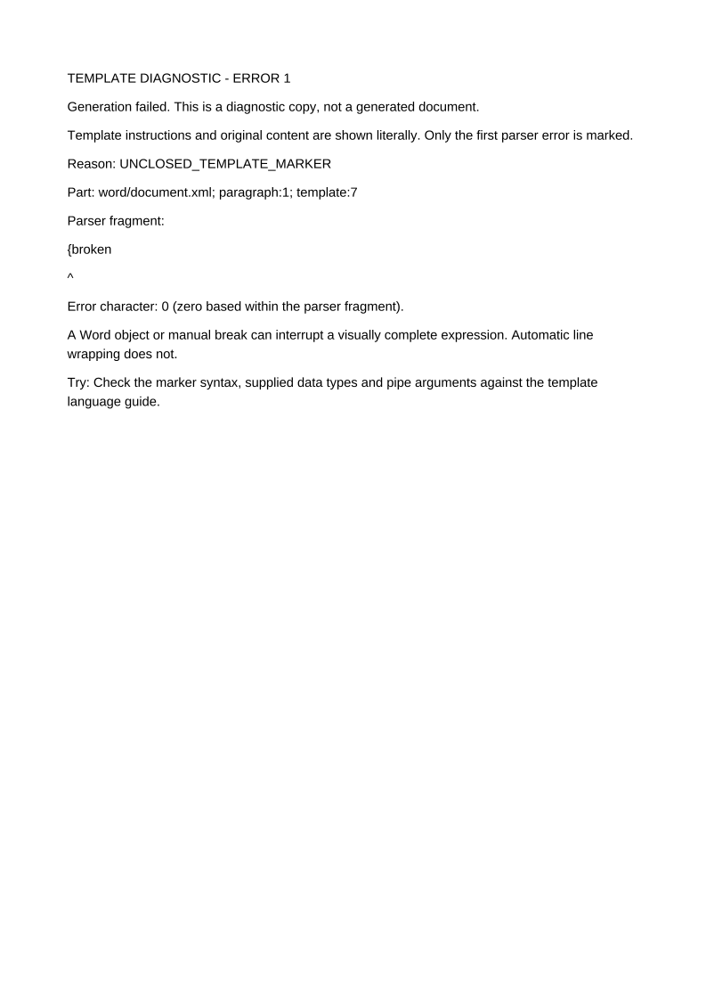

1. Choose your machine
Download and extract the AMD64 kit for Intel/AMD, or ARM64 for Apple Silicon and other ARM64 systems. Create the custom-fonts and extensions folders beside its Compose file.


DEVELOPMENT PLAYGROUND
Build a request, generate a document and find a template error. Use the same engine and API as your application, with a browser to help you explore.
Your installation, your documents. This website is a guide, not a hosted Playground. The Playground runs on your own development installation. Development responses and logs can contain document text; use synthetic data and your own access controls.
01 · GET STARTED
Use the development Playground image. The production image contains the API without the Playground interface.
Download and extract the AMD64 kit for Intel/AMD, or ARM64 for Apple Silicon and other ARM64 systems. Create the custom-fonts and extensions folders beside its Compose file.
Run from the extracted folder:
docker compose up -dOpen http://localhost:8080/playground/ in your browser. Choose either the production or Playground kit for port 8080.
Choose DOCX or PDF output, upload your Word template and enter its JSON data. Inspect the available providers and options. Start with the synthetic example kit if you do not yet have a template.
Generate the document, then download the result. Export the JSON request and curl instructions to repeat it from your application or terminal. The template and resource files remain separate uploads.
02 · TRY AN EXAMPLE
Type these markers as ordinary text in Word. Paste the data into the Playground, generate, then change one value and try again.
Dear {customer.name},With the data below, the name becomes Ada Lovelace.
{#if approved}Approved{#else}Draft{/if}Change approved from true to false to switch the text.
{issuedOn | date("dd-MM-yyyy")}The date becomes 28-10-2026. See the date and time reference for other patterns.
{
"customer": {"name": "Ada Lovelace"},
"approved": true,
"issuedOn": "2026-10-28"
}Want a fuller test? The seven downloadable scenarios include nested conditions and loops, null values, watermarks, Word output and images. The template guide explains the supported syntax and Word structure rules.
03 · CHOOSE FONTS
The provider explorer and font controls list the available families and faces. Bundled fonts need no upload. Mounted fonts can be selected through their resource IDs.
Upload a standalone TTF or OTF face and enter its actual family, style and resource ID. The Playground adds the font declaration and binary resource together. Font selection supplies a font; it does not rename or replace the font used in Word.
PDF output embeds the used faces and checks technical embedding permissions. Names alone do not guarantee glyph coverage. See fonts and operations for deployment guidance.
04 · FIND AN ERROR
Available from 0.3.0-alpha.4: download a marked diagnostic PDF after a template syntax failure.
For a deliberate test, remove the closing brace from a field such as {customer.name}. The error response shows the reason, parser excerpt, request ID and available Word location.
Choose Download diagnostic PDF. The Playground uses the original failed upload. A red ERROR 1 marks the source fragment, and an extra page explains what the parser read.


These are actual engine-generated pages from a synthetic demonstration. An inline error label can change wrapping. Unsupported Word structures or unavailable fonts can prevent PDF creation; the original text diagnosis stays visible. The diagnostic download requires development mode and produces validated standard PDF, separately from your requested business-output profile.
YOUR NEXT STEP
Use the Playground to understand your template and request. Use the same REST API or embedded engine in your application.